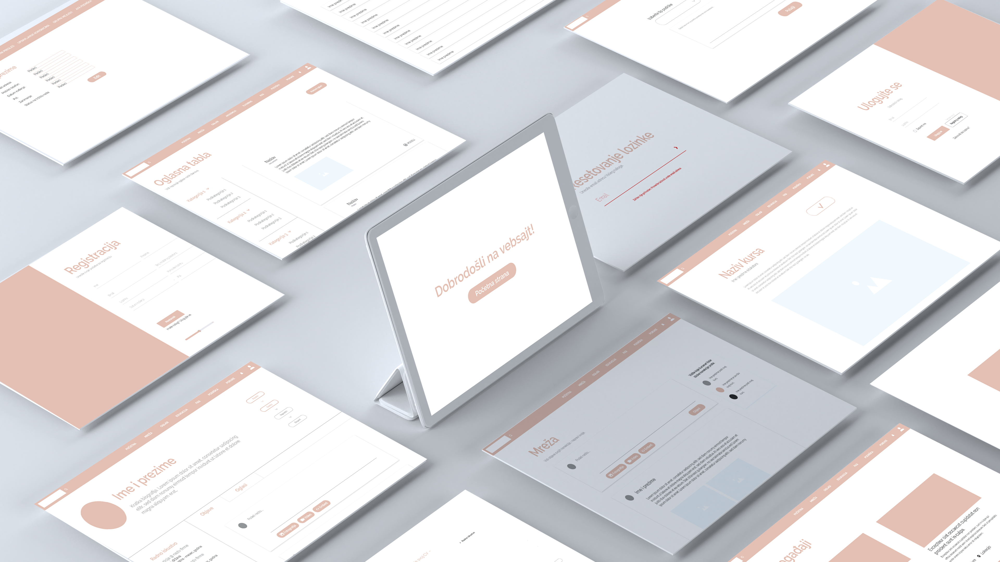

Serbian Women Education Project
Composed the website wireframe for a large-scale women education project by the Association for Female Affirmation (AFA).
Overview
AFA (Association for Female Affirmation) organized a large-scale project meant to educate more than 50,000 women of Serbia on various academic and practical skills, taught by professionals. The basis was to develop a website where ‘educators’ would create courses and give online lessons to women that signed up for the platform. The goal was to empower women through increasing practical skills and knowledge.
Problem and Solution Statement
In Serbia, gender inequality is prevalent in the workforce. Women in Serbia are disadvantaged due to an educational system that does not promote a balance between work, school and domestic duties. Many lose opportunities to pursue education or attain work experience because of the expected duties of women, such as unpaid household work. Women who are in need of work, due to their economic situation or cost of living, are often forced into lower-paying jobs. The goal was to empower women through increasing their practical skills and knowledge in various spheres, and thus improving their potential for independence and career prosperity.
Roles and Responsibilities
Our team consisted of a designer and a developer: I was the designer and I was working with a colleague developer, who I’d worked with on previous projects as well. He was responsible for establishing the backend and certain frontend requirements for the system. Meanwhile I was in charge of defining clear user journeys and creating a website UX prototype.
Scope and Constraints
Scope:
- The platform was to have over 50,000 members and hundreds of educators actively creating new courses and giving lessons.
- Some of the features included: registration, virtual course board (regular for members and academic for educators), tech support, blog, individual lectures/lessons, tutoring options, course creation and course question database, social network, profiles, chatting, etc.
- Administrative requirements/features: authentication, admin panel, CRUD operations, etc.
Limiting factors:
- Time: we had to finish the first draft (including the prototype) within one month
- Budget: the platform needed to be under €10,000/month in costs, including service, hosting, administrative and help desk staff etc.
- Team size: since our team only consisted of two people, we needed to be as efficient as possible, and our expertise often merged together.
The Process

- Creating a backend list of requirements and features
- Forming the ‘Functional and Non-Functional Requirements’ document (organizing databases, processing registration requests, user-server interaction, etc.)
- Discussing user needs and forming a persona of a typical member
- Amending the functional requirements document
- Creating the first draft of the prototype in Adobe XD
- Peer review of the prototype, changing unclear steps in the use case and adding extra web pages for networking
- Developing the social networking aspect (adding “connections”, chatting options, blog posts and comments, etc.)
- Review of the second draft
- Further smaller amendments in clarifications, readability and usability
- Presenting the final UX draft to the project leader and investors
User personna

Usability discussion
Our team consisted of a designer and a developer: I was the designer and I was working with a colleague developer, who I’d worked with on previous projects as well. He was responsible for establishing the backend and certain frontend requirements for the system. Meanwhile I was in charge of defining clear user journeys and creating a website UX prototype.
Outcomes and Results
Website Wireframes - Member
Pages

Mockups

The board approved our prototype, and the project was passed onto the UI design team.